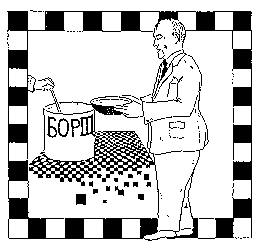

" With what gusto I ate! How delicious it was. It was Greek, southern fare. Powerfully, like the body of a bull, a whole green pepper lay in the borscht, displaying its side like the bull that abducted Europa."
--Yuri Olesha, Soviet writer,"No Day Without A Line" (1965)
* * *
Click HERE to register your comments...or improve the recipe.
Or do you want to take another look at the homepage MENU?
Or do you want to SEARCH for something specific?
--Yuri Olesha, Soviet writer,"No Day Without A Line" (1965)
* * *
Click HERE to register your comments...or improve the recipe.
Or do you want to take another look at the homepage MENU?
Or do you want to SEARCH for something specific?
Mockva Borshch
(Malorossisky Borshch)
A grand Russian soup of the people. J. Bahr of Winnipeg, Manitoba, Canada, writes that it is similar to a family recipe brought from the Black Sea area--except "we add chopped dill to the soup right from the beginning as well as coarsely chopped potatoes. We add sweet or sour cream in the bowl of soup after serving (or horseradish to taste). Try it, you'll like it!" Another reader suggests cooking smoked ham hocks in the broth right from the start. Serve hot, as a meal or as a first course, to 6-8 people.
Souptale: Borshch was originally named after a weed--the borshchevik--a universal ingredient in the earliest days of soupmaking. It was only later, in the 10th and 11th centuries, that peasants starting adding beetroot, when it was imported from from Europe into the Ukraine--which then became the main beet-growing region in Russia. In fact, the classic Russian borshch, as noted, is called "malorossisky borshch," from the Old Russian name for Ukraine. While Ukrainians used their abundant beets for everyday soup, in the less fertile north borshch was a special treat only to be cooked for festivals. Thus its great popularity with northern artists. Alexander Pushkin and Nikolai Gogol were known to savor their borshch to the very last drop.
- 2 Tablespoons butter
- 1 onion, chopped
- 1 and 1/2 lbs. red beets, peeled and cut into 1/8 x 2" strips
- 1/4 cup red wine vinegar
- 1 teaspoon sugar
- 2 fresh tomatoes (or 4-6 canned), peeled and chopped
- 2 teaspoons salt
- black pepper
- 1 and 1/2 quarts beef stock
- 1/2 lb. cabbage, shredded
- 1/4 lb. ham, cut into cubes
- 1 lb. leftover beef, cut into small chunks
- handful of parsley
- 1 bay leaf
In a Dutch oven, saute the onions in butter for about 5 minutes. Stir in the beets, then add vinegar, sugar, tomatoes, 1 teaspoon of the salt, and a few grindings of pepper. Pour in 1/2 cup of the stock, cover, and simmer for an hour.
Pour the rest of the stock into the soup, add the chopped cabbage, and bring to a boil. Stir in the ham and beef, parsley and bay leaf, and simmer, partially covered for 30 minutes.
When ready to serve, ladle into bowls, sprinkle with chopped fresh dill, and serve with a bowl of whipped sour cream.